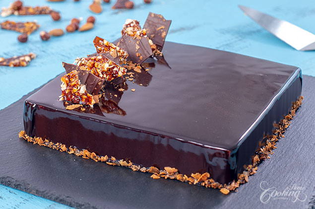

Chocolate Royal - Trianon

As a chocolate lover I simply fell in love with this elegant French dessert called Chocolate Royal or Trianon.
A hazelnut and almond dacquoise topped with a crunchy praline, covered in chocolate mousse and a cocoa mirror glaze. What not to love about this? Pretty easy recipe to prepare at home but very impressive in look and flavor.
Really loved the crunchy praline which is made with a caramelized hazelnut and almond homemade paste mixed with crunchy paillete feuilletine and milk chocolate. You have to admit everything here sounds totally amazing.
Hope you will give it a try, and let me know if you do. Enjoy!
Prep time=1 hr + freezing time || Cook time=20 minutes || Total time=1 hr 20 minutes + freezing time
Ingredients
Makes about 10 servings
Almond and hazelnut dacquoise
1/3 cup (35g) ground hazelnuts
1/3 cup (35g) ground almonds
1/2 cup (60g) powdered sugar
2 large egg whites (about 70g)
2 tbsp (30g) sugar
1 1/2 tbsp (12g) cornstarch
1/4 tsp (1g) salt
Praline Crunch
For Praline Paste
1/2 cup (50g) whole hazelnuts
1/2 cup (50g) whole almonds
1/3 cup (70g) sugar
1 tbsp (15ml) water
1/4 tsp (1g) salt
For crunch
1 cup (80g) Paillete Feuilletine or corn flakes
1.5 oz (45g) milk chocolate, melted
Chocolate Mousse
10 oz (300g) semi-sweet chocolate
1 cup (240g) whipping cream
1/2 tbsp (5g) gelatin powder
2 tbsp (30ml) cold water
1 1/3 cup (320g) whipping cream (35% fat), chilled
Cocoa mirror glaze
1 tbsp +1/2 tsp (12g) gelatin powder
1/4 cup (60 ml) water
1 cup (200g) sugar
1/2 cup (60g) cocoa powder
1/2 cup (120g) whipping cream
1/3 cup (80ml) water
Chocolate shards , optional
1.5 oz (45g) semisweet chocolate
0.5 oz (15g) semisweet chocolate, for tempering
Caramel Shards
1/4 cup (25g) hazelnuts/almonds, toasted if desired and chopped
1/4 cup (50g) sugar
1 tbsp (15ml) water
Directions
Prepare the almond and hazelnut dacquoise. Preheat oven to 400F (200C) and line a baking sheet with parchment paper. I’ve used a 12 inch (30cm) round sheet. In a food processor blend ground almonds and hazelnuts with powdered sugar and cornstarch until well combined. In a medium bowl whip whites with salt until foamy. Gradually add sugar and continue whipping until stiff peaks form. Gently incorporate the almond mixture. Spread batter into the prepared pan. Bake for 12 minutes until golden. Let cool completely. Prepare Praline crunch. First prepare Praline Paste. Preheat oven to 300F (150C). Place the nuts on a baking sheet and let them toast for 15 minutes. Transfer the toasted nuts onto a clean kitchen towel and rub the nuts to remove as much skin as possible. Let them cool. In a small saucepan heat sugar and water over medium high heat until turns golden brown. Stir in nuts to coat with the caramel and transfer the praline to a baking sheet to cool completely. Break the praline into smaller pieces. Grind in a food processor until it gets into a thick paste, for about 10 minutes. Transfer the praline paste into a bowl and stir in melted milk chocolate. In the end add paillete feuilletine and stir to combine. Cut the almond and hazelnut dacquoise into a 7 inch (18 cm) square. Spread the praline crunch on top of it. Freeze until you prepare the chocolate mousse. Prepare chocolate mousse. In a heat proof bowl add the semi-sweet chocolate and 1 cup (240g) whipping cream. Place the bowl over a saucepan with simmering water, over low heat, until all the chocolate is melted. Meanwhile dissolve gelatin in cold water and let it swell for about 5 to 10 minutes. Dissolve gelatin over low heat, pour over the melted chocolate and stir to combine. Let the chocolate mixture cool completely at room temperature. Whip the remaining 1 1/3 cup (320g) chilled whipping cream until soft peaks form. Add melted chocolate mixture and mix until well combined. Transfer mousse into a piping bag fitted with a large plain tip. Assembly. Use a 8 inch ( 20 cm) square ring or a mold as the one I’ve used from Delicake. Line with acetate sheet for easier removal. Place the frozen dacquoise into the middle of the ring with crunchy praline on top. Pipe the chocolate mousse on sides and top. Smooth the top. Freeze for a couple of hours or overnight. Prepare cocoa mirror glaze. Dissolve gelatin in ¼ cup (60ml) cold water and let it swell for about 5 to 10 minutes. In a medium saucepan add sugar and cocoa powder. Stir to combine. Add ? cup (80ml) water and whipping cream, stir slightly to combine and place over medium heat. Bring to a boil and remove from heat. Add bloomed gelatin into the hot cocoa mixture and stir until completely dissolved. Sieve the glaze to remove any air bubbles and let cool to 95F (35C) before pouring over the frozen cake. Take the cake out of the freezer and use a hair dryer to defrost slightly the edges. Remove the cake from the ring and place it over a rack or simply on a bowl placed over a parchment paper lined baking sheet to collect the excess. Pour the glaze on top and edges of the cake. Use an offset spatula to remove the drips and decorate the bottom of the cake with paillete feuilletine. Transfer the cake to a serving platter and refrigerate for 1-2 hours to defrost the cake and set the glaze. Meanwhile prepare chocolate shards. Melt 1.5 oz (45g) semisweet chocolate over bain-marie. Remove from heat and add remaining chopped semisweet chocolate for tempering. Stir until melted. Spread chocolate evenly into a thin layer on a parchment paper lined baking sheet. Sprinkle paillete feuilletine on top if desired and refrigerate until set. Break into shards and keep refrigerated until ready to use. Prepare caramel shards: Spread chopped hazelnuts/almonds on a parchment paper lined baking sheet. Place water and sugar into a small saucepan and cook over medium heat until sugar dissolves and gets a caramel dark color. Pour the caramel over the chopped nuts and let it set. Break into shards and keep refrigerated until ready to use. Decorate the cake with chocolate and caramel shards and enjoy! Keep leftovers refrigerated.
Nutrition facts
1 Serving out of 10 - Calories:689, Fat:41.3g, Saturated Fat:20.6g, Carbohydrates:76.6g, Sugar:57g, Fiber:4.1g, Protein:10.8g, Cholesterol:77mg, Sodium 138mg 6%, Vitamin D 0mcg 0%, Calcium 102mg 8%, Iron 3mg 15%, Potassium 393mg 8%, daily percent values are based on a 2000 calorie diet